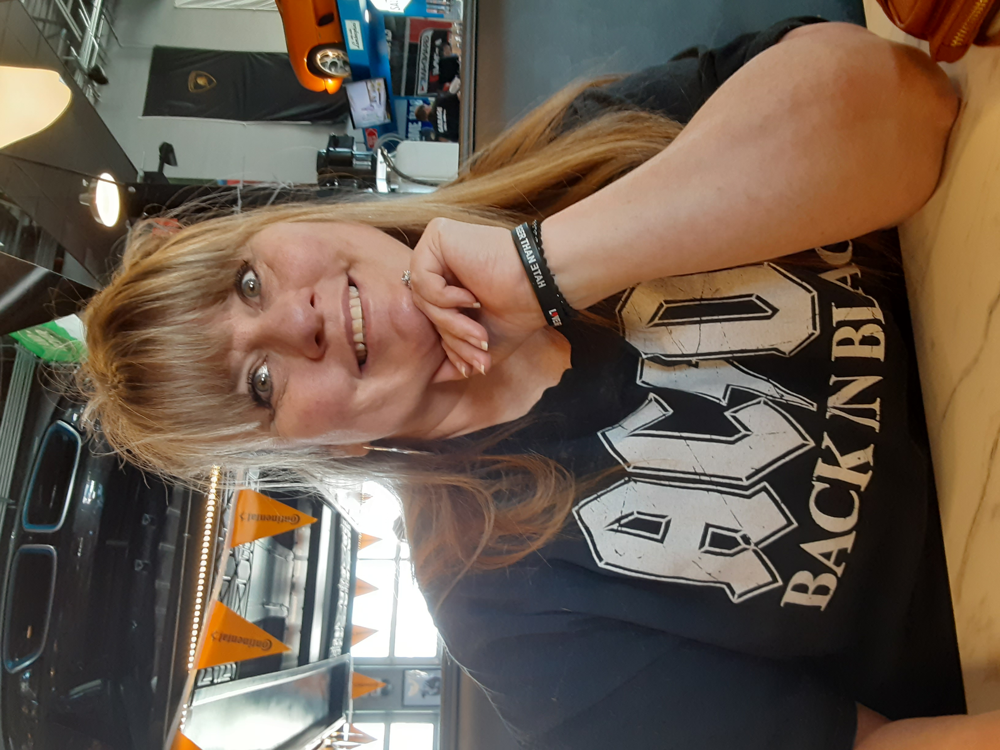

About Me!
Hello and welcome crystal family!! I am so excited you found my website! I am so excited
to get to know you and tell you about myself!.. My name is Angie, I have two boys and am
happily married. It took me many years to find this journey and I am beyond grateful I
did!
Let me backup just a little bit. I remember my first crystal, it was Pyrite, my dad brought
it home and called it fools gold. I thought it was so neat, like real gold! My next crystal
I remember was Tigers eye. My dad had a ring, and I thought it was really cool. My innocence
and being a young child at the time, thought it was a real Tigers eye. Not much after that,
however I do remember older ladies, while up at my grandparents cabin wearing Turquoise
jewelry. I want to say my Aunt even had some. The memory is not clear. Anyway, the final
crystal I remember growing up was Amethyst. I do not have a clear story on that one, but I
do fondly remember it. As I grew older, I was never fond of crystals. Or should I say, they
just did not peak my interest. And when I think back to that, I believe it is because I did
not know the power, the energy, the history behind crystals or where they really came from.
Chaos
I believe it was nine years ago where my journey began, and it did not start with
crystals.. It started with the Universe! I was going through one of the hardest times of
my life. I was heartbroken and lost. One thing that helped me escape my pain was
reading. I love reading, and read more than ever to rest my mind. One of the many books
I read was ‘The Secret’. That book changed my thinking, it helped me accept things I
could not accept in the past and it led me to change my life. Change me as a person. I
continued getting better, happier, meeting new people and making new friends. I met
people that wore crystals as jewelry, sold crystals, and used crystals in their daily
life. I bought some here and there, nothing big. I had a friend that started selling
crystals, so later I decided to buy from her, support her. I bought crystals that were
pretty to me. I started learning the names of the crystals and learned that they come
from the Universe.. Mother Earth, they are here for a reason and hold great energies for
many different things. I started to research and buy more crystals. I bought crystals
that I felt I needed, not because of their beauty. I bought crystals that were good for
sadness, anxiety, keeps away negativity, brings joy and happiness. I started a pretty
good collection.. I won’t lie, it got a little bit out of hand, but I was so drawn to
their energy!.. I can stand by my fireplace mantel where a good portion of my Spheres
are and feel the energy! It is such a neat feeling! I started to use my crystals for
manifesting and speaking to the Universe. I am now learning to ground myself and
meditate with crystals, and looking to learn more about our chakras. I decided to sell
crystals, because I want others to experience these energies. I want to share my
experience as to why I love crystals. I hope you find your peace regardless and all that
makes you happy, you have. Thank you for reading! I hope you have a beautiful
day!